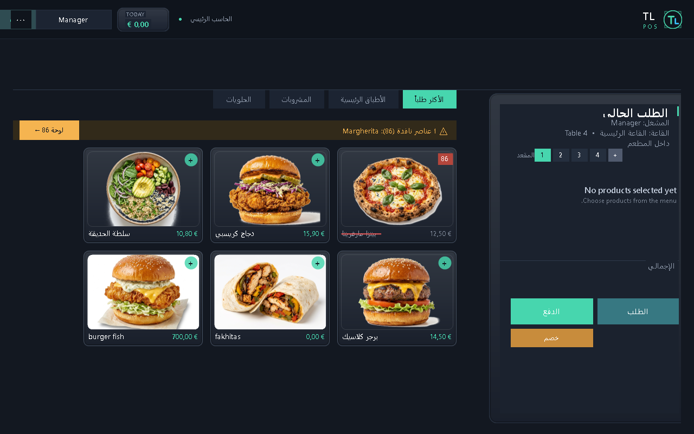
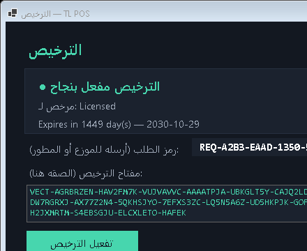
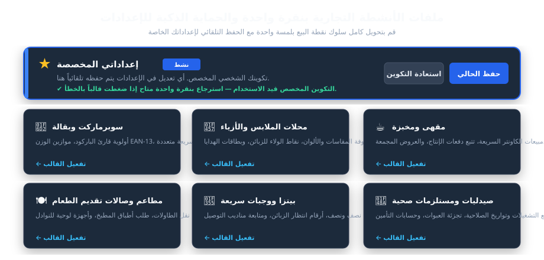
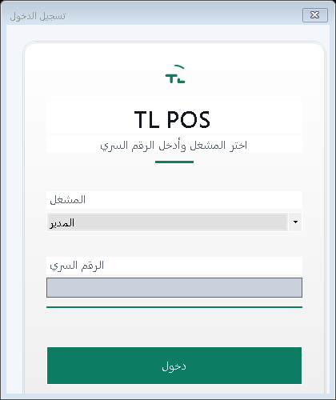
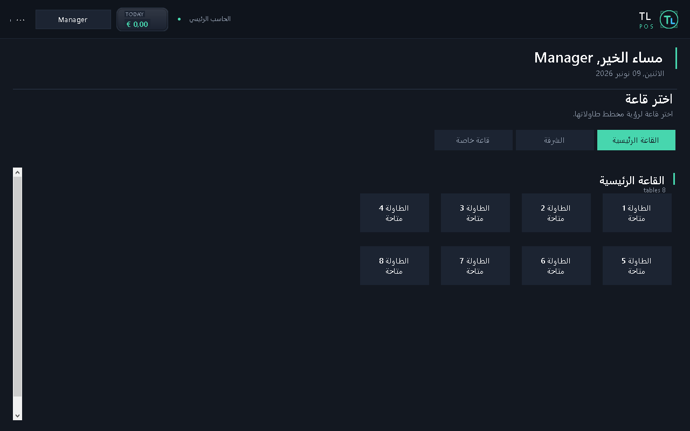
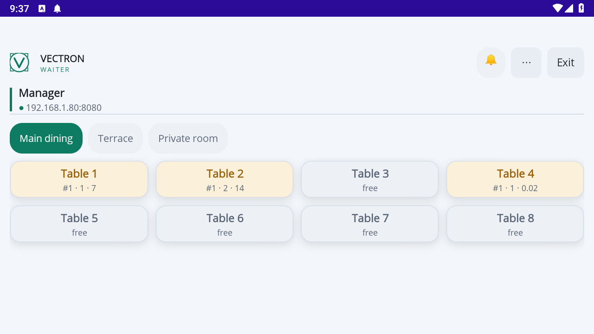
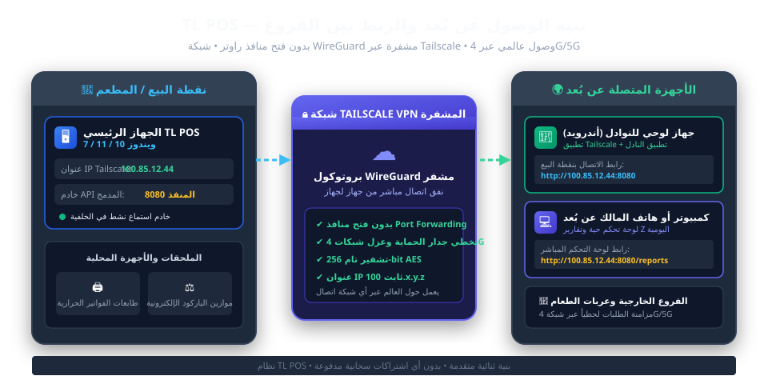

07. تكامل أجهزة النادل اللوحية (تطبيق TL للنوادل)صفحة 16
08. الربط عن بُعد وإدارة الفروع عبر شبكة Tailscale VPNصفحة 18
09. إدارة المخزون، الوصفات وتتبع المكوناتصفحة 20
10. النسخ الاحتياطي، الصيانة ودليل معالجة الأعطالصفحة 21
💡 فلسفة تصميم نظام TL POS
تم تصميم نظام TL POS ليعمل بأعلى معايير الاستقرار والسرعة الفائقة في بيئات العمل التجارية الصعبة:
انعدام الاعتماد على أي برمجيات خارجية ثقيلة، إقلاع فوري في أقل من ثانية واحدة، حفظ ذري للبيانات يحمي من انقطاع الكهرباء المفاجئ،
واستقلالية تامة دون الحاجة لأي اشتراكات سحابية مدفوعة.
01 نظرة عامة على النظام والبنية التقنية
منظومة TL POS المتكاملة
TL POS هو نظام برمجي احترافي متكامل لإدارة نقاط البيع والمطاعم والمتاجر،
تم تصميمه وتطويره بواسطة لونيس تينوش (TL). يتميز باستجابة لحظية، واجهة عصرية فائقة السلاسة،
وتوافق تام بين أجهزة الكاشير المكتبية العاملة بنظام ويندوز والأجهزة اللوحية المحمولة العاملة بنظام أندرويد.

شكل 1.1 — شاشة البيع الرئيسية لنظام TL POS (كتالوج المنتجات، سلة المشتريات التفاعلية، الدفع السريع ولوحة الأرقام).
التوافق المزدوج مع أنظمة التشغيل (Dual-Target)
على عكس الأنظمة الحديثة المبنية على متصفحات ثقيلة تستهلك الذاكرة، يعمل نظام TL POS عبر محرك مبرمج خصيصاً
ومجمّع بلغة ثنائية خفيفة تدعم بيئتين رئيسيتين:
الإصدار / المنصة
نظام التشغيل المدعوم
استهلاك الذاكرة (RAM)
الاستخدام الموصى به
TL POS ويندوز 10/11 (net10.0)
ويندوز 10 وويندوز 11 (64 بت)
~45 ميجابايت
أجهزة نقاط البيع اللمسية الحديثة، أجهزة المدراء والمحمول.
TL POS ويندوز 7 (net48)
ويندوز 7 SP1، ويندوز 8.1، POSReady 7
~25 ميجابايت
أجهزة الكاشير اللمسية القديمة والصناعية (معالجات Atom/Celeron).
تطبيق النادل أندرويد
أندرويد 8.0 حتى أندرويد 15
~35 ميجابايت
الأجهزة اللوحية، الهواتف الذكية للنوادل في الصالات والمسابح.
💎 نمطان للألوان ومستويان للأداء الرسومي
النمط الفاتح / النمط الداكن : تبديل فوري لتناسب الإضاءة المحيطة (إضاءة هادئة للمطاعم ليلاً أو إضاءة ساطعة للمتاجر نهاراً).
الأداء العالي (High Tier) : تدرجات لونية عصرية، ظلال ناعمة وانتقالات سلسة بمعدل 60 إطاراً في الثانية.
الأداء الخفيف (Lite Tier) : واجهة مسطحة تماماً بدون أي مؤثرات متحركة أو استهلاك للمعالج، مثالية للأجهزة الاقتصادية.
شكل 1.2 — واجهة النمط الداكن: راحة بصرية فائقة وأناقة مميزة تناسب أجواء المقاهي والمطاعم.
فك الضغط ونقل الملفات :
ضع مجلد البرنامج في المسار C:\TL POS أو مباشرة على سطح المكتب.
البرنامج محمول بالكامل (Portable): لا يتطلب تثبيت خوادم معقدة ولا قواعد بيانات SQL خارجية ثقيلة.
اختيار الملف المناسب لنظامك :
لويندوز 10 و 11: استخدم الملف التنفيذي في المجلد publish-win10-x64\TL POS.exe.
لويندوز 7 أو POSReady: استخدم الملف في المجلد publish-win7\TL POS.exe.
إنشاء اختصار على سطح المكتب :
انقر بزر الفأرة الأيمن على ملف TL POS.exe ← إرسال إلى (Send to) ← سطح المكتب (إنشاء اختصار).
التشغيل الأولي :
انقر مرتين على الاختصار، وسيبدأ البرنامج فوراً مطالباً إدخال مفتاح الترخيص عند التشغيل لأول مرة.
🔒 أمان وسلامة قاعدة البيانات
يتم تخزين كافة البيانات (المنتجات، الأقسام، الطاولات، الفواتير، إعدادات الطابعات، وحسابات الموظفين)
داخل المجلد client database\ بجوار ملف البرنامج.
تعتمد عمليات الحفظ على تقنية الكتابة الذرية (Atomic Flush) التي تمنع تلف البيانات تماماً حتى عند انقطاع التيار الكهربائي المفاجئ.
03 تفعيل الترخيص المشفر (ECDSA)
حماية أمنية متقدمة عبر خوارزمية ECDSA
يعتمد نظام TL POS على نظام تشفير وحماية رقمية فائق الأمان مبني على المنحنيات الإهليلجية
(ECDSA P-256 مع خوارزمية التجزئة SHA-256). يضمن هذا النظام حماية الملكية الفكرية،
ويمنح العميل ترخيصاً دائماً مدى الحياة دون الحاجة للاتصال بخوادم ترخيص عبر الإنترنت.

شكل 3.1 — نافذة تفعيل ترخيص نظام TL POS مع معرّف الجهاز الفريد (Machine ID).
خطوات التفعيل خطوة بخطوة
عند تشغيل البرنامج لأول مرة، تظهر نافذة «TL POS — تفعيل الترخيص» تلقائياً.
يظهر معرّف الجهاز (Machine ID) المكون من 16 حرفاً ورقماً ست عشرياً
(مثال: A1B2-C3D4-E5F6-7890). هذا الرقم يتم توليده رياضياً من المكونات العتادية للجهاز.
اضغط على زر نسخ المعرّف وأرسله إلى الموزع المعتمد أو مباشرة إلى المطور لونيس تينوش (TL).
ستستلم مفتاح ترخيص موقعاً رقمياً ومسجلاً باسم منشأتك التجارية.
اكتب اسم العميل / المنشأة، والصق مفتاح الترخيص في الخانة المخصصة، ثم اضغط على زر تفعيل الترخيص.
يتحقق البرنامج من التوقيع الرياضي لحظياً، وينشئ ملف license.dat، ويفتح لك صلاحية الاستخدام الدائم مدى الحياة.
⚠️ تنبيه هام حول الترخيص
يرتبط الترخيص باللوحة الأم والمعالج للجهاز. في حال رغبت بتغيير جهاز الكاشير مستقبلاً،
يكفي التواصل مع الدعم الفني وتقديم فاتورة الشراء لإعادة إصدار ترخيص للجهاز الجديد.
04 ملفات الأنشطة التجارية والحماية الذكية
6 قوالب جاهزة للأنشطة التجارية المختلفة
تختلف متطلبات العمل من نشاط تجاري لآخر. يوفر نظام TL POS ميزة ملفات الأنشطة بنقرة واحدة،
حيث يتم تحويل كامل سلوك الشاشات، أولوية قارئ الباركود، حساب الوزن التلقائي، وتوزيع طابعات المطبخ بلمسة واحدة:

شكل 4.1 — بنية قوالب الأنشطة الستة مع درع الحماية الذكي «إعداداتي المخصصة».
نوع النشاط
السلوك التجاري والإعدادات التلقائية
🛒 سوبرماركت وبقالة
أولوية قصوى للمسح السريع عبر قارئ الباركود، قراءة فورية لباركود الوزن EAN-13، مسح كميات متعددة وفتح تلقائي لدرج النقدية.
👗 محلات الملابس والأزياء
إدارة مصفوفة المقاسات والألوان، نظام نقاط الولاء للزبائن، استبدال القطع وسندات الائتمان، وبطاقات الهدايا.
☕ مقهى ومخبزة
مبيعات سريعة على الكاونتر، إدارة وجبات الإفطار والمجموعات، وفصل ضرائب الاستهلاك المحلي عن الوجبات الجاهزة (Takeaway).
🍽️ مطاعم وصالات تقديم الطعام
مخطط تفاعلي للصالة والطاولات، نقل ودمج الطاولات، طلب أطباق الوجبة (مقبلات/رئيسي/حلوى)، تقسيم الفاتورة ومزامنة أجهزة النوادل.
🍕 بيتزا ومطاعم الوجبات السريعة
بيتزا نصف ونصف، خيارات الإضافات، مناداة الزبائن بالرقم أو البيب، تتبع مناديب التوصيل وشاشات المطبخ الذكية (KDS).
💊 صيدليات ومستلزمات صحية
تتبع أرقام التشغيلات (Lot) وتواريخ الصلاحية، تجزئة العبوات (من علبة إلى شريط)، وحسابات التأمين الصحي للعملاء.
درع الحماية الذكي «إعداداتي المخصصة» (Safeguard)
لحماية بياناتك وإعداداتك الخاصة (اسم المحل، نسبة الضريبة، الطابعات المربوطة، وتفضيلات الفواتير) من التغيير غير المقصود عند استعراض القوالب،
يحتوي نظام TL POS على آلية أمان ذكية:
بمجرد تعديل أي خيار في الإعدادات، يتم حفظه فوراً في ملفك الشخصي المخصص.
إذا قمت بالنقر على أحد القوالب التجريبية للاطلاع عليه، يظل زر استعادة إعداداتي ظاهراً في أعلى الشاشة للعودة لتكوينك الأصلي بنقرة واحدة.
05 العمليات اليومية: الكاشير، الطاولات والمبيعات
1. تسجيل دخول الموظف وفتح الصندوق (العهدة النقدية)
عند تشغيل النظام أو تبديل الوردية، تظهر شاشة القفل وتطلب من الكاشير أو النادل اختيار اسمه وإدخال رمزه السري المكون من 4 أرقام.

شكل 5.1 — شاشة اختيار الموظف مع شعار TL العصري ولوحة الأرقام اللمسية.
💰 إدخال رصيد بداية اليوم (العهدة الصباحية)
عند أول فتح للوردية في الصباح، يطلب البرنامج تسجيل قيمة العهدة النقدية في الدرج (رصيد الفكة).
يتم عزل هذا المبلغ تماماً عن إيرادات المبيعات واحتسابه تلقائياً عند جرد الصندوق في نهاية اليوم (تقرير Z).
2. تسجيل الطلبات في نمط المطاعم (الصالة والطاولات)
اضغط على تبويب الصالات والطاولات في شريط التنقل العلوي.
اختر الصالة المطلوبة (مثال: الصالة الرئيسية، الشرفة الخارجية، الدور العلوي).
تظهر الطاولات المشغولة باللون الأزرق / السماوي مع قيمة الحساب والوقت المنقضي، بينما تظهر الطاولات الشاغرة باللون المحايد.
المس الطاولة الشاغرة لفتح طلب جديد، وسيظهر كتالوج الأقسام والمنتجات.
المس الأصناف لإضافتها للسلة. لتحديد خيارات خاصة (مثل: بدون بصل، شواء خفيف)،
انقر على الصنف في السلة لفتح قائمة الملاحظات والإضافات.
اضغط على زر إرسال للمطبخ، وستتم طباعة بون الطلب فوراً في طابعة المطبخ المختصة، وتتحول الطاولة إلى مشغولة.

شكل 5.2 — مخطط الصالات التفاعلي: متابعة مباشرة للطاولات المشغولة والشاغرة وقيم الطلبات في الوقت الفعلي.
3. تسجيل الطلبات في نمط المبيعات السريعة (محلات / وجبات سريعة)
في نمط الكاونتر السريع، يقوم الكاشير بتمرير السلع أمام قارئ الباركود أو الضغط على المنتجات على الشاشة اللمسية،
ويتم تسجيل الطلب مباشرة دون الحاجة لاختيار طاولة.
4. طرق الدفع وتقسيم الفاتورة
عند رغبة العميل بالحساب، اضغط على زر دفع الحساب :
نقداً (Cash) : اكتب المبلغ المستلم من الزبون، فيعرض النظام المبلغ المتبقي المستحق للعميل بخط كبير ويفتح درج النقود تلقائياً.
بطاقة بنكية (Card) : تسجيل الدفع الإلكتروني عبر جهاز الدفع (TPE / POS).
دفع مختلط / تقسيم الحساب : يتيح دفع جزء نقداً وجزء بالبطاقة، أو تقسيم الفاتورة بالتساوي بين الزبائن.
5. إغلاق الصندوق اليومي (تقارير X و Z)
نوع التقرير
الوظيفة والأثر المحاسبي
تقرير القراءة X (تقرير مؤقت)
يعطي كشفاً فورياً بحجم المبيعات خلال الوردية دون إغلاق الصندوق، ومتاح للمدير في أي وقت خلال اليوم.
تقرير الإغلاق النهائي Z (التقرير اليومي)
يتم إصداره نهاية اليوم: يطبع إجمالي المبيعات، تفاصيل الضرائب، مجموع المقبوضات حسب وسيلة الدفع (نقداً، بطاقات، شيكات)،
فروقات الصندوق، ويقوم بأرشفة عمليات اليوم وتصفير العداد لليوم التالي.
يدعم نظام TL POS جميع طابعات الإيصالات الحرارية العالمية (Epson, Star Micronics, Bixolon, Xprinter, Munbyn وغيرها)
سواء عبر تعريفات ويندوز القياسية، أو عبر أوامر البث المباشر ESC/POS عبر منافذ USB، الشبكة المحلية LAN، أو Wi-Fi.
⚡ حماية متطورة عند توقف خادم الطباعة (Windows Spooler)
في حال تعطلت خدمة الطباعة في ويندوز (Spooler / RPC Server Unavailable)، فإن نظام TL POS لا ينهار:
بل يكتشف المشكلة فوراً، ويدخل في وضع الحماية مع إرشادك لإعادة تشغيل الخدمة بأمر سطر الأوامر البسيط: net start spooler.
درج النقدية : يتم توصيله عبر كابل RJ11 خلف الطابعة الحرارية مباشرة، ويرسل النظام نبضة الفتح تلقائياً عند الدفع النقدي.
قوارئ الباركود (USB / Bluetooth) : تعمل تلقائياً بمجرد التوصيل بنمط محاكاة لوحة المفاتيح دون الحاجة لأي تعريفات إضافية.
07 تكامل أجهزة النادل اللوحية (تطبيق TL للنوادل)
أخذ الطلبات اللمسي على الطاولات
يحول تطبيق TL للنوادل (TL Waiter) المطور بتقنية .NET MAUI أي جهاز لوحي أو هاتف أندرويد
إلى محطة بيع متنقلة وفائقة السرعة للنوادل داخل الصالات، في الشرفات الخارجية، أو بجوار المسابح.

شكل 7.1 — تطبيق النادل على أندرويد: مخطط تفاعلي للطاولات وتصفح لمسي سريع لقائمة الطعام.
الاتصال بالشبكة المحلية (Wi-Fi)
يحتوي جهاز الكاشير الرئيسي على خادم REST مدمج يعمل على المنفذ 8080.
لربط الأجهزة اللوحية داخل المنشأة:
اربط الجهاز اللوحي بنفس شبكة الواي فاي المتصل بها جهاز الكاشير.
على جهاز الكاشير، افتح الإعدادات ← الشبكة لمعرفة عنوان IP المحلي للجهاز (مثال: 192.168.1.50).
افتح تطبيق TL للنوادل على الجهاز اللوحي، واضغط على القائمة ... أعلى الشاشة، ثم اكتب عنوان الخادم: http://192.168.1.50:8080.
تتم مزامنة الأصناف والصالات والطلبات فوراً في أقل من ثانية واحدة.
08 الربط عن بُعد وإدارة الفروع عبر Tailscale VPN
لماذا يعتبر Tailscale الحل الأفضل لنظام TL POS؟
تقليدياً، كان ربط الأجهزة الخارجية (مثل طاولات الشارع المقابل، عربات الطعام الخارجية، أو مراقبة المدير لمتجره من المنزل)
يتطلب اشتراك IP ثابت ودفع تكاليف شهرية باهظة وفتح منافذ في الراوتر (Port Forwarding)، مما يجعل الشبكة عرضة للاختراق.
مع خدمة Tailscale، يتم إنشاء شبكة افتراضية مشفرة من جهاز لجهاز (Mesh VPN)
باستخدام بروتوكول WireGuard العسكري فائق الأمان. تتصل الأجهزة ببعضها مباشرة في أي مكان في العالم
حتى عبر شبكات إنترنت الجيل الرابع والخامس (4G/5G) وخلف جدران الحماية المعقدة (CGNAT)!

شكل 8.1 — مخطط المعمارية والربط الآمن بين الكاشير والأجهزة اللوحية الخارجية والملاك عبر Tailscale VPN.
الخطوة 1: تثبيت Tailscale على جهاز الكاشير الرئيسي (ويندوز)
ادخل على موقع https://tailscale.com وأنشئ حساباً مجانياً (يدعم حتى 100 جهاز مجاناً).
قم بتحميل وتثبيت برنامج Tailscale لويندوز على جهاز الكاشير الرئيسي وسجل الدخول بحسابك.
يمنحك البرنامج عنوان IP ثابت خاص يبدأ بالرقم 100.x.y.z (مثال: 100.85.12.44).
الخطوة 2: ربط جهاز النادل اللوحي عبر 4G/5G أو واي فاي خارجي
على هاتف أو تابلت النادل، ثبت تطبيق Tailscale من متجر Google Play.
سجل الدخول بنفس الحساب، وسينضم الجهاز فوراً للشبكة المشفرة.
افتح تطبيق TL للنوادل، واكتب في عنوان الخادم: http://100.85.12.44:8080 (مع استبدال الرقم بعنوان IP Tailscale الخاص بكاشيرك).
يمكن للنادل الآن استقبال الطلبات في أي مكان خارجي وتصل الطلبات للمطبخ لحظياً.
الخطوة 3: لوحة متابعة حية لمالك المشروع (من المنزل أو الهاتف)
من أي جهاز كمبيوتر شخصي أو هاتف ذكي خاص بالمالك مثبت عليه Tailscale، افتح متصفح الإنترنت واكتب الرابط: http://100.85.12.44:8080/reports
ستظهر لك لوحة تحكم فورية تعرض إجمالي المبيعات، متوسط الفاتورة، الطاولات المشغولة، وحركة المخزون لحظة بلحظة دون التأثير على عمل الكاشير.
09 إدارة المخزون، الوصفات وتتبع المكونات
1. تتبع المخزون البسيط (المواد الجاهزة)
للمنتجات التي تباع كما هي (المشروبات المعبأة، السناكس، الملابس، الأجهزة)،
قم بتفعيل خيار تتبع المخزون في بطاقة المنتج. مع كل عملية بيع يتم خصم الكمية تلقائياً،
وتظهر تنبيهات للكاشير فور وصول الرصيد إلى الحد الأدنى لإعادة الطلب.